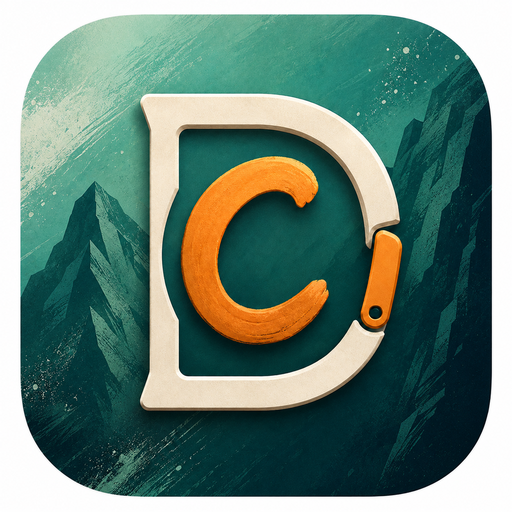
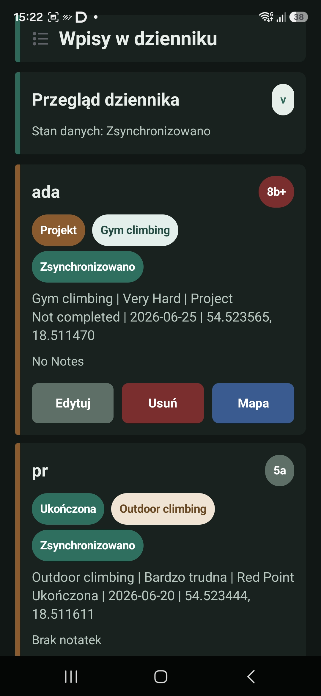

Routes and quick logging
Save grade, style, date, place, GPS, tags, notes and a local photo or beta video.

Climbing journal for Android
Log routes and sessions, manage projects, understand your progress, and climb together with friends. Keep a clear history whether you train indoors or climb outside.
One climbing history
Climbing Diary connects everyday logging with practical analysis. See not only route totals, but also consistency, grade distribution, active projects and the work still needed for your target.
Save grade, style, date, place, GPS, tags, notes and a local photo or beta video.
Choose a training focus, log attempts, moves and RPE, use the rest timer and review session volume.
Keep attempt history and beta notes, then mark a project as completed in one step.
Review best sends, trends, indoor and outdoor volume, styles and a pyramid for your goal.
Invite friends or groups, follow participant progress and arrange shared training.
Map columns from an existing spreadsheet and export your data to PDF, CSV or Excel.

Data you can use
Every entry supports projects, session history and analytics. Revisit route details, review a month of training or assess your readiness for a goal without maintaining separate notes.
A simple rhythm
Add one route or start a session and record attempts without entering the place and date again.
Separate completed routes from projects while keeping beta and attempt history together.
Your send pyramid, physical tests and consistency trend show where the next training block belongs.
Clear access model
The trial does not start an automatic payment. When it ends, the app requires Lifetime Local Pro or an active Premium subscription. Google Play will show the final price and billing period before purchase.
Try local and cloud features before deciding.
For climbers who want a complete journal on one device.
For multiple devices, friends, groups and coaches.
You can upgrade from Lifetime Local Pro to Premium later without losing local entries. Manage and cancel Premium in Google Play; access continues until the end of the paid billing period.
For teams and coaches
Coach mode extends the journal with group tools. Create teams, assign challenges, follow progress and organise shared sessions.
Group features require an account and active Premium.
Frequently asked questions
No. The current 7-day trial does not charge you automatically. Choose and confirm Lifetime Local Pro or Premium in Google Play after the trial.
Only on your device. Export regularly because uninstalling the app, clearing its data or losing the device may remove the local journal.
Yes. Sign in and activate Premium to prepare existing local entries for cloud sync.
Entries are saved locally. Premium retries sync when the connection returns and shows whether data is synced, pending or in error.
Use Google Play subscription settings. You keep access until the end of the current billing period. Cancelling does not delete the account.
Route and project attachments currently remain on the device and are not uploaded to Firebase.
Use the in-app path or the public account deletion page. Account deletion and subscription cancellation are separate actions.
The first release targets Android. iOS may follow later, but there is no publication date yet.
Help and data
Include your phone, app version and the steps leading to the issue. A screenshot helps.
Send a reportSee what the app processes, why permissions are needed and how retention works.
Read the policyStart a request in the app or without reinstalling it.
Account deletionPublisher verification, billing and store testing are in progress. The installation link will appear here when Google Play testing begins.